Version Control 101.
Git, GitHub and GitHub Co-Pilot tutorial evening
Community coding event. This Wednesday 7th June to The Common, Cleveland Ave.
Come along at 6:30 if you already have Git installed, or 6pm if you don’t and would like some help getting set up.
In this tutorial we’ll get set up using Git in the terminal then talk about how to fix things when they go wrong.
We’ll start by going through some of the most common Git commands in the terminal, then we’ll move on to using GitHub and Co-Pilot later in the evening.
If you are totally new to Git and you don’t have Git set up on your computer, then come along at 6:00 instead of 6:30 to get set up.
Section 1: Welcome to Git!
What is version control?
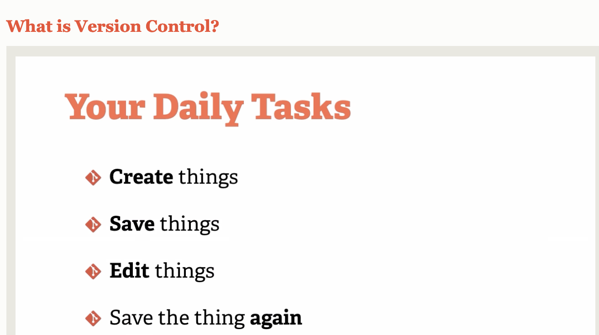
During a project, you’re likely to encounter the above tasks. - Maintaining multiple versions and revisions of files gets really messy when done by hand. - Moreover, when multiple people work on the same document, saving their independent changes to the same file can be difficult. - In a complex project with multiple files, things could get really cumbersome.
Git is version control software which handles these issues by keeping track of the changes from one version to the next. Past versions of the project are still present, but they are hidden from the user.
Git allows multiple users to edit the same document, and save their changes remotely. Conflicts are handled in a neat way by merging changes together.
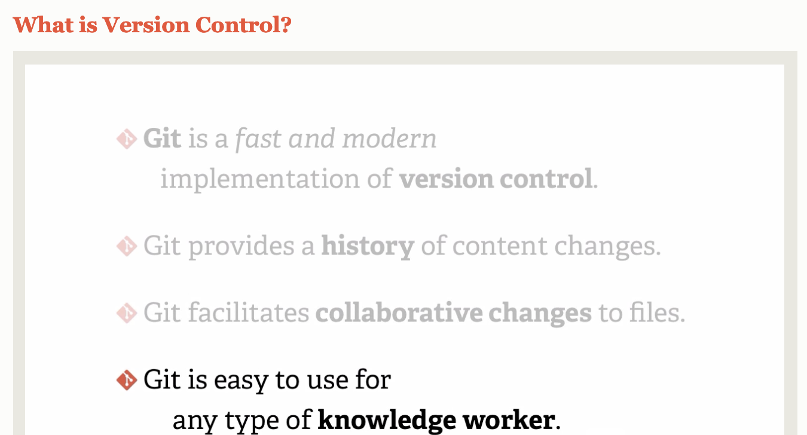
1. Getting Git set up on your machine
Get online
username:
password:
install git
Linux:
head to terminal and enter sudo dnf install git-all
Mac OS:
open Terminal and enter $ git --version then follow prompts to install.
If you don’t have XCode tools installed, you might need to install homebrew, then once that’s setup type brew install git
Windows:
download and install from https://git-scm.com/download/win
Having trouble?
Poke around here https://git-scm.com/book/en/v2/Getting-Started-Installing-Git
Google or check stack overflow
Ask for help if someone is free!
2. configure Git on your machine
git config --global user.name "Mona Lisa"
3. Initialize a git repository
Once we’ve all got git running on our computer, we can move on on to the next Choose a location on your computer for the project folder to reside, then type
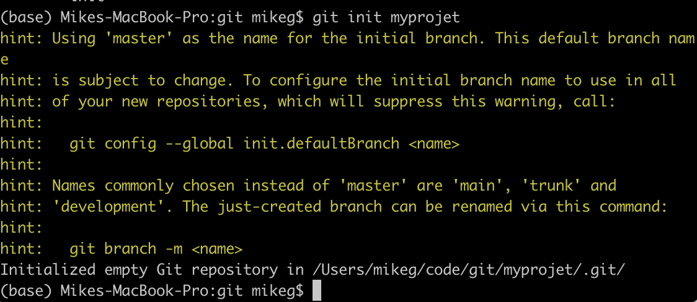
This will create a folder called myproject, within which any changes will be tracked by git. You can confirm the existance of this by typing ls into the terminal.
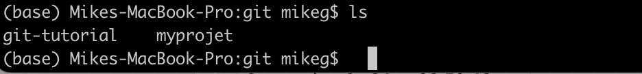
Once you’ve initialized a git project, there are a few useful commands to learn:
cd myproject will change into the directory named ‘myproject’. You should do this if you haven’t already.
touch README.txt will add a readme file to the current directory. You can also just save a .txt file using notepad.
git status will show you which files are present, what’s been changed since you last worked on the project, and which changes will be in the next commit
git add .adds new and modified files to the staging area, where they are ready to commit. Try running git status again to see the changes.
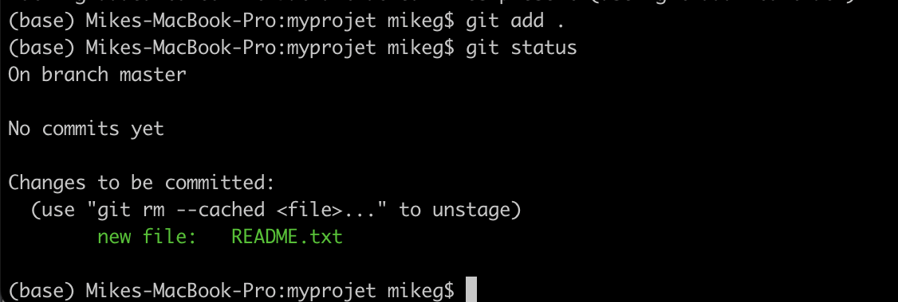
git commit -m'initial commit' saves (commits) the changes which were added to the staging area.
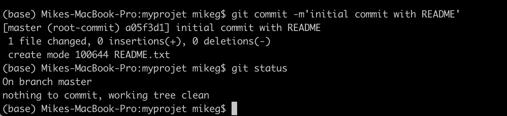
4. Edit the contents of the git repo
You can use any text editor.
If you have a preferred one then use that.
Otherwise install VS Code from https://code.visualstudio.com/
I edited the contents of the readme file to include contents for a packing list.
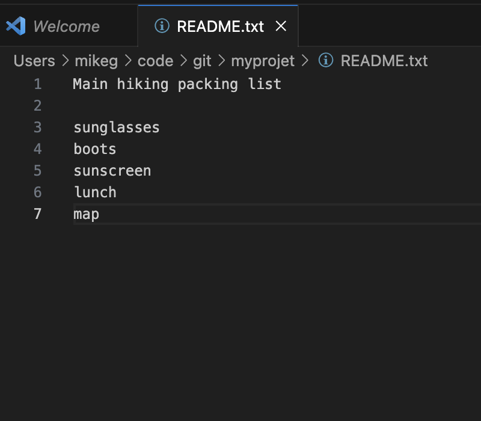
The new changes are not in the staging area on the master branch yet.
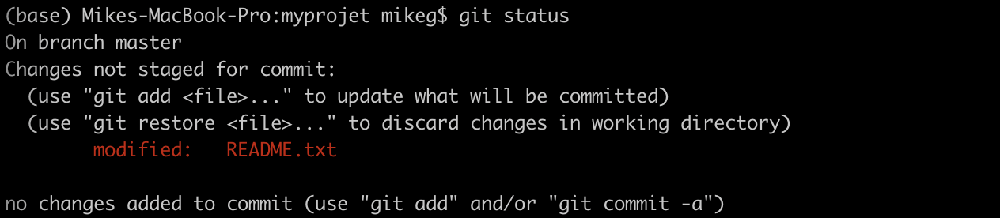
Running git add . adds the changes to the staing area on the master branch 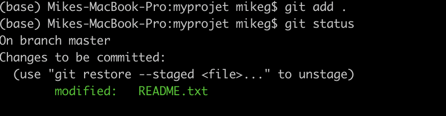
Now we can commit the changes by typing `git commit -m ‘add hiking gear’ 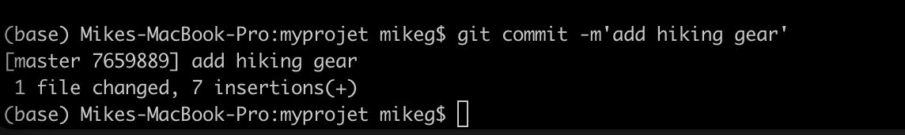
Making a different branch
We’re currently on the master branch. We could make some changes on a different branch and the original branch will remain unchanged until we merge the brances back together later. Let’s try this! 
git branch ellys-edit
git checkout ellys-edit
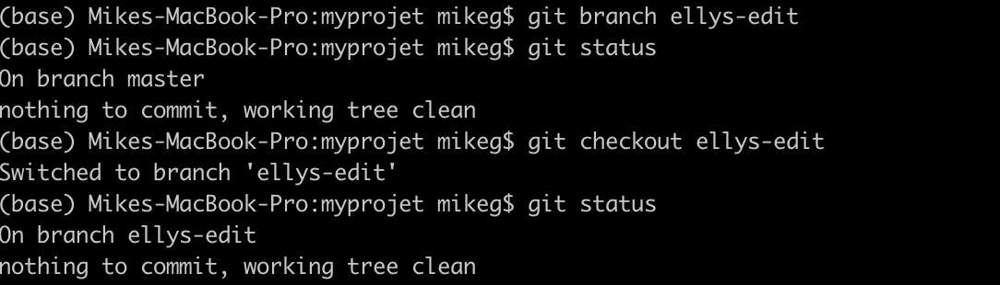
git branch 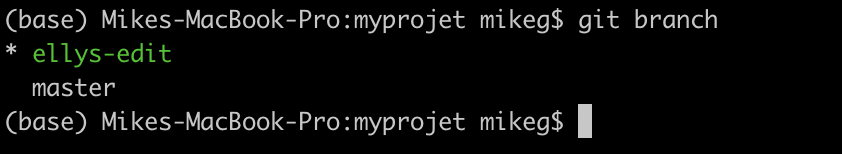
The green text indicates the branch we’re currently on
Now we’re on the new branch, let’s make some changes.
In this scenario, Elly has been given the task of arranging food for the trip. She creates a new file called food.txt and populates it with important food supplies.
While she’s at it, she realizes that the forecast is for cloud and rain, so she removes sunscreen and sunglasses from the original packing list.
Finally, she renames the README file to gear.txt 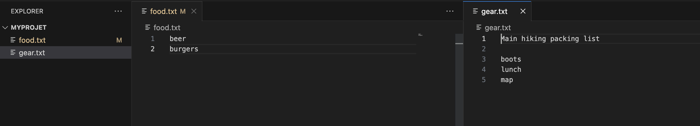
Here’s what the changes look like in the terminal 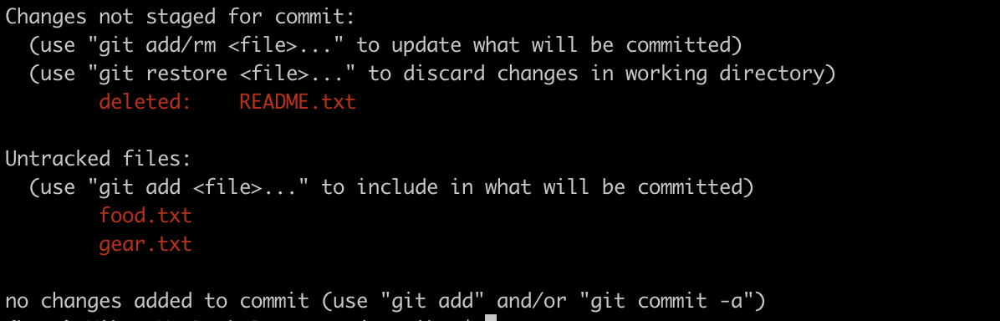
To commit these changes to the master branch, we can run git add . then commit the changes.
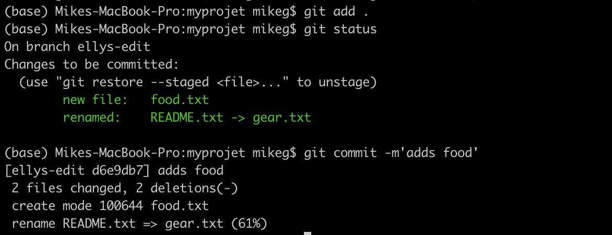
Switching between branches
By typing git checkout master and git checkout ellys-branch we can switch between branches. This changes the contents of the directory - have a play with it with the directory open.
Merging two branches
To merge the changes from another branch, into the one we’re currently on, we can use git merge ellys-edit from the master branch.
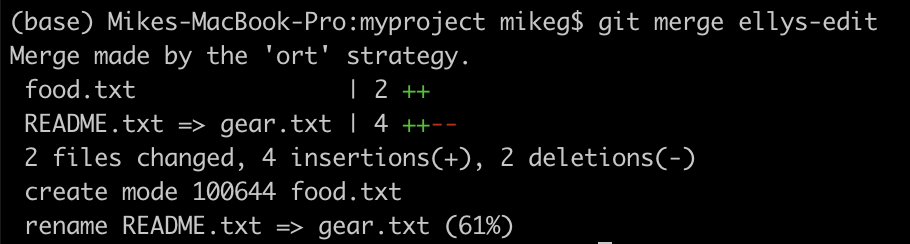
When things go wrong.
merge conflict
Making edits like this works most of the time, but sometimes we have a conflict, for example when someone edits the same line as code as you - and it isn’t obvious how to merge these edits. In this case we’ll see an error message and we’ll be asked which edit to keep.
Let’s check this out by supposing that I want to save weight by replacing the beer with an empty water bottle, and Elly wants to take it to the next level by ditching the burgers, and adding more beer…
I’ve changed to the respective branches and made the edits to this, and committed the changes on each branch.
Look at the git log on each branch to see what was done. 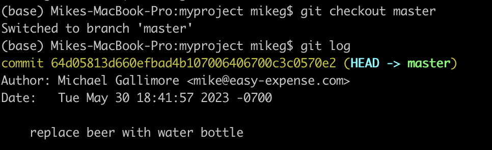
and on ellys-edit:
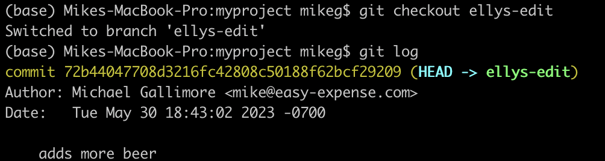
Let’s try a git merge:
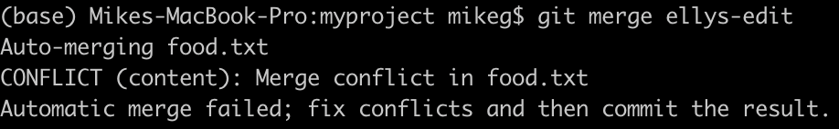
Git status gives us more info on the merge conflict - both the branches being merged attempt to modify the same file.
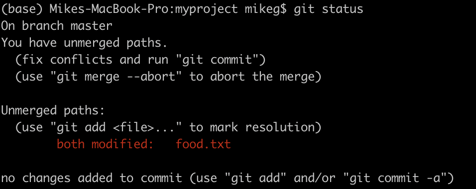
Git diff
git diff shows us the difference between the commits, and where the conflict exists. !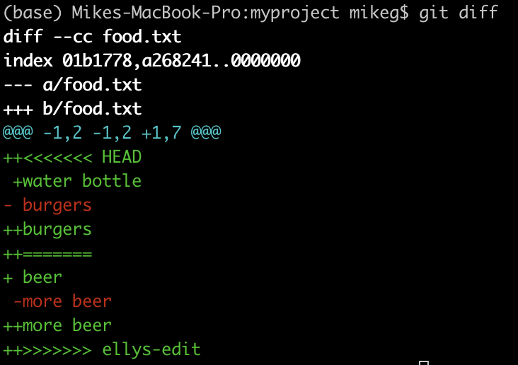
- We have a couple of ways to deal with this - we can abort the merge using
git merge --abortand use a new command such asgit merge --strategy-option ours - Or we can edit the conflicting file partway through the merge. To do this, head to the file in conflict, and remove all the <<<<<<< HEAD, ======= and >>>>>>> ellys-edit sections, then leave the file as you’d like it in the final merged version.
At this point I’ve gone ahead and opened up food.txt in a text editor, and left it how I’d like the final version to be. Let’s see how things look in the terminal.
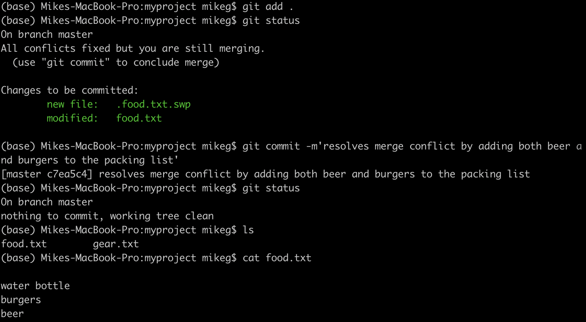
Conclusion
Great! We’ve installed Git, made a project, edited the project on different branches, done a git merge, and learnt to resolve merge conflicts.
Let’s see what to do when things go even more wrong in the next section.